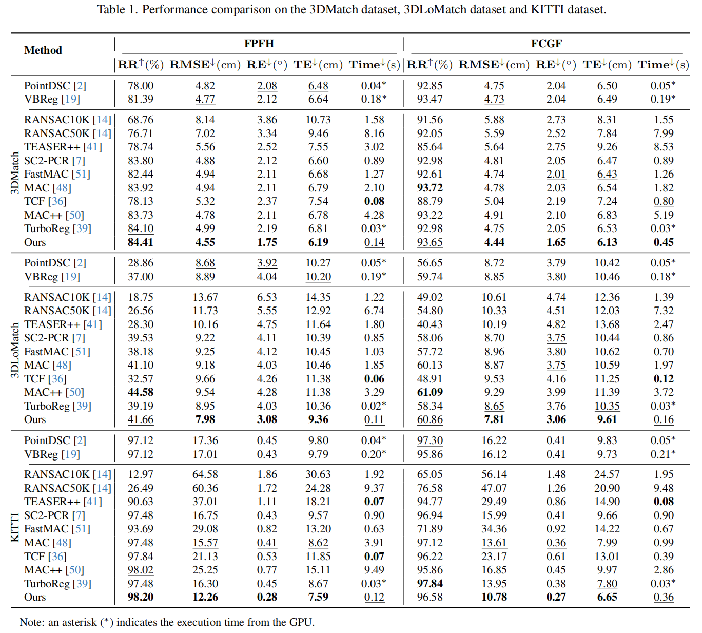

Noisy, partially overlapping data and the need for real-time processing pose major challenges for rigid registration. Considering that feature-based matching can handle large transformation differences but suffers from limited accuracy, while local geometry-based matching can achieve fine-grained local alignment but relies heavily on a good initial transformation, we propose a novel dual-space paradigm to fully leverage the strengths of both approaches. First, we introduce an efficient filtering mechanism consisting of a computationally lightweight single-point RANSAC algorithm and a subsequent refinement module to eliminate unreliable feature-based correspondences. Subsequently, we treat the filtered correspondences as anchor points, extract geometric proxies, and formulate an effective objective function with a tailored solver to estimate the transformation. Experiments verify our method's effectiveness, as demonstrated by a 32x CPU-time speedup over MAC on KITTI with comparable accuracy.
01
We design a dual-space optimization framework that synergistically integrates correspondences in feature and local geometric spaces to accurately estimate rigid transformations.
02
We propose an efficient progressive filtering mechanism for feature-based correspondences, which is achieved through fast filtering based on 1-point RANSAC and accuracy refinement using a probability-guided 3-point RANSAC sampler.
03
Based on the filtered feature-based correspondences, we construct a geometric proxy point set and dynamically establish geometry-based correspondences, ultimately achieving accurate rigid registration.

This paper presents an efficient and robust framework for rigid point cloud registration, integrating novel feature correspondence filtering with dual-space optimization. We first propose an efficient filtering algorithm for feature-based correspondences, including a novel one-point RANSAC paradigm that rapidly filters inaccurate correspondences using confidence scores and a three-point RANSAC-based refinement module via probability-based weighted sampling to boost accuracy. Regarding these filtered correspondences as anchors, we further construct geometric proxies, enabling the extraction of local geometry-based candidate correspondences with enhanced spatial consistency. Then we propose a dual-space optimization algorithm with adaptive robust weights to estimate the transformation. Combined with an efficient iterative optimization algorithm, our method achieves fast and accurate rigid registration. Extensive experimental validation confirms the registration accuracy and computational efficiency of our method.
We conducted comprehensive evaluations of our method against current state-of-the-art approaches on the indoor 3DMatch/3DLoMatch and outdoor KITTI datasets.

@inproceedings{li2026dualreg,
title = {DualReg: Dual-Space Filtering and Reinforcement for Rigid Registration},
author = {Li, Jiayi and Yao, Yuxin and Lu, Qiuhang and Zhang, Juyong},
booktitle = {Proceedings of the IEEE/CVF Conference on Computer Vision and Pattern Recognition (CVPR)},
year = {2026}
}